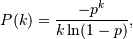

numpy.random.logseries¶
- numpy.random.logseries(p, size=None)¶
Draw samples from a Logarithmic Series distribution.
Samples are drawn from a Log Series distribution with specified parameter, p (probability, 0 < p < 1).
Parameters : loc : float
scale : float > 0.
size : {tuple, int}
Output shape. If the given shape is, e.g., (m, n, k), then m * n * k samples are drawn.
Returns : samples : {ndarray, scalar}
where the values are all integers in [0, n].
See also
- scipy.stats.distributions.logser
- probability density function, distribution or cumulative density function, etc.
Notes
The probability density for the Log Series distribution is

where p = probability.
The Log Series distribution is frequently used to represent species richness and occurrence, first proposed by Fisher, Corbet, and Williams in 1943 [2]. It may also be used to model the numbers of occupants seen in cars [3].
References
[R206] Buzas, Martin A.; Culver, Stephen J., Understanding regional species diversity through the log series distribution of occurrences: BIODIVERSITY RESEARCH Diversity & Distributions, Volume 5, Number 5, September 1999 , pp. 187-195(9). [R207] Fisher, R.A,, A.S. Corbet, and C.B. Williams. 1943. The relation between the number of species and the number of individuals in a random sample of an animal population. Journal of Animal Ecology, 12:42-58. [R208] D. J. Hand, F. Daly, D. Lunn, E. Ostrowski, A Handbook of Small Data Sets, CRC Press, 1994. [R209] Wikipedia, “Logarithmic-distribution”, http://en.wikipedia.org/wiki/Logarithmic-distribution Examples
Draw samples from the distribution:
>>> a = .6 >>> s = np.random.logseries(a, 10000) >>> count, bins, ignored = plt.hist(s)
# plot against distribution
>>> def logseries(k, p): ... return -p**k/(k*log(1-p)) >>> plt.plot(bins, logseries(bins, a)*count.max()/ logseries(bins, a).max(), 'r') >>> plt.show()